User Manual¶
This user manual assumes that the user is already familiar with the FEniCS framework. Gryphon is intended for use under FEniCS 1.0.0 using the Python API.
Handling Explicit Time Dependency¶
In order for the Gryphon to recognize explicit time dependent expressions, the variable representing time must be named t. If we want to represent the function
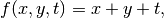
we can do it in two ways. The simplest way is to write
f = Expression("x[0] + x[1] + t",t=0)
or we could define a class
class f(Expression):
def eval(self,values,x):
values[0] = x[0] + x[1] + self.t
Note that the variable t must be assigned an initial value.
Constructing a Gryphon Object¶
In order to use Gryphon in the FEniCS framework, you first have to import a module. If we would like to use the an ESDIRK solver, we can import it as such
from Gryphon import ESDIRK
The constructor for the ESDIRK object have three required arguments and four optional keyword arguments. The header for the constructor is as follows
def __init__(T,u,f,g=[],bcs=[],tdf=[],tdfBC=[]):
The arguments have the following interpretations:
T: This argument should be an array with two elements defining the start and end of the time domain you wish to integrate over.
u: This argument represent the initial condition used for the time integration. It should be represented as a Function-object defined on the spatial mesh for which to integrate.
f and g: The ESDIRK solver assumes that your problem is on the form
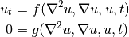
The arguments f and g should be a Form representing the weak form of the right hand side of your problem. If you are solving a system of PDEs, you can pass a list of Form-objects corresponding to each equation in the system. An example of this can be found at the end of this document where the Gray-Scott model is solved.
tdf: If the Form in f or g contains functions which are explicitly dependent on time, they must be sent to the ESDIRK-object via this argument. See the heat equation example for an illustration on how this argument is used.
bcs: This argument should be a list of DirichletBC-objects defining the Dirichlet boundary conditions of your problem.
tdfBC: If any of the boundary conditions specified in f or g are explicitly dependent on time, they must be sent to the ESDIRK-object via this argument. See the heat equation example for an illustration on how this argument is used.
Parameters¶
The ESDIRK-library inherits the parameter system included in the FEniCS framework. This allows any user familiar with FEniCS to quickly get an overview of the available parameters for a ESDIRK-object by calling
info(ESDIRK_object.parameters, verbose=True)
By default, this will return the following output
<Parameter set "gryphon" containing 3 parameter(s) and 2 nested parameter set(s)>
gryphon | type value range access change
--------------------------------------------------------------------------------------------
drawplot | bool false {true, false} 0 0
method | string ESDIRK43a [ESDIRK32a, ESDIRK32b, ESDIRK43a, ESDIRK43b] 0 0
verbose | bool false {true, false} 0 0
<Parameter set "output" containing 3 parameter(s) and 0 nested parameter set(s)>
output | type value range access change
----------------------------------------------------------------
path | string outputData [] 0 0
plot | bool false {true, false} 0 0
statistics | bool false {true, false} 0 0
<Parameter set "timestepping" containing 10 parameter(s) and 0 nested parameter set(s)>
timestepping | type value range access change
-------------------------------------------------------------------------------------
absolute_tolerance | double 1e-07 [] 0 0
adaptive | bool true {true, false} 0 0
convergence_criterion | string absolute [absolute, relative] 0 0
dt | double 0.001 [] 0 0
dtmax | double 0.1 [] 0 0
dtmin | double 1e-14 [] 0 0
inconsistent_initialdata | bool false {true, false} 0 0
pessimistic_factor | double 0.8 [0, 1] 0 0
relative_tolerance | double 1e-06 [] 0 0
stepsizeselector | string standard [gustafsson, standard] 0 0
It should be noted that the parameter sets “output” and “timestepping” are nested under the parameter set “gryphon”. This means that if we for instance would like to turn off adaptive time stepping, turn on plotting and save statistics, we have to write the following:
ESDIRK_object.parameters["timestepping"]["adaptive"] = False
ESDIRK_object.parameters["drawplot"] = True
ESDIRK_object.parameters["output"]["statistics"] = True
The various parameters have the following interpretations:
Parameter set: gryphon¶
method¶
(Default value: "ESDIRK43a")
This parameter defines which ESDIRK method the program should use when doing the timestepping. Available methods to choose from are ESDIRK43a, ESDIRK43b, ESDIRK32a, ESDIRK32b. For details on these methods, see the table below
| Name | Order | Implicit Stages | Local Extrapolation |
|---|---|---|---|
| ESDIRK4/3a | 4 | 4 | Yes |
| ESDIRK4/3b | 3 | 4 | No |
| ESDIRK3/2a | 3 | 3 | Yes |
| ESDIRK3/2b | 2 | 3 | No |
drawplot¶
(Default value: False)
If this parameter is set to True, the program will display a plot of the solution in each time step using the built in plot-function included in the FEniCS framework (Viper). Note that the plot is initialized with the keyword argument rescale=True.
verbose¶
(Default value: False)
If this parameter is set to True, the program will output a progress bar showing the progress of the time stepping. Example output can be seen below.
|====>............... | 27.2% t=2.722 Completion in ~ 0:03:42
|====>............... | 27.3% t=2.728 Completion in ~ 0:03:44
|====>............... | 27.3% t=2.733 Completion in ~ 0:03:30
|====>............... | 27.4% t=2.739 Completion in ~ 0:03:22
|====>............... | 27.4% t=2.744 Completion in ~ 0:03:36
|=====>.............. | 27.5% t=2.750 Completion in ~ 0:03:23
|=====>.............. | 27.6% t=2.755 Completion in ~ 0:03:37
The estimated run time of the program is calculated as
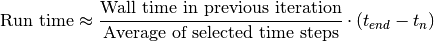
where 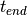 is the end of the time domain and 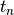 is
the current time in time step  . This is obviously a very rough
estimate which for example will fail to give a meaningful estimate if
the solution have a very rapid behavior.
. This is obviously a very rough
estimate which for example will fail to give a meaningful estimate if
the solution have a very rapid behavior.
Parameter set: output¶
path¶
(Default value: outputData)
This parameter defines the path to a folder where the program may save output, relative to the current working directory. Usually, this will result in a folder outputData being created in the same folder as the script you are running.
plot¶
(Default value: False)
If this parameter is set to True, the program will export a plot of the solution in each time step to VTK-format. If you are solving a system of PDEs, each component will be saved separately. The plots will be saved in the following folder:
$current_working_directory/savepath/plot/
statistics¶
(Default value: False)
If this parameter is set to True, the program will output statistics to a .tex-file and an .ascii-file as well as saving a plot of the selected step sizes. Example output can be seen in the section Example Output. All the data will be saved to the path defined by the parameter path.
Parameter set: timestepping¶
adaptive¶
(Default value: True)
This parameter indicates whether the program should use adaptive stepsize selection or not. If set to False, fixed time step integration will be used where the fixed time step is defined by the parameter dt.
convergence_criterion¶
(Default value: "absolute")
When deciding whether or not to accept a time step, the estimated local error can be subject to one of two user specified criteria; “absolute” or “relative”. If convergence_criterion = "absolute", the step is accepted if
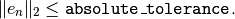
If convergence_criterion = "relative" the step is accepted if
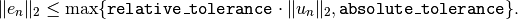
In the above statements, 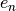 is the estimate for the local error
and 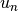 is the numerical solution in time step .
dt¶
(Default value: 1e-3)
This parameter defines the size of the first time step. If the parameter adaptive = False, this is the time step used by the program through the entire domain.
dtmax¶
(Default value: one tenth of the width of the time domain)
This parameter defines the greatest allowable time step which the stepsize selector is allowed to take.
dtmin¶
(Default value: 1e-14)
This parameter defines the smallest allowable time step which the program can use. The program will terminate if this boundary is reached.
inconsistent_initialdata¶
(Default value: False)
If the initial data for solving a system of PDEs (which semidiscretize into a DAE system) is inconsistent, the program can attempt to take a very small time step in order to get consistent data. If successful, the program will continue with the initial time step specified by dt.
pessimistic_factor¶
(Default value: 0.8)
This parameter defines the pessimistic factor used in the adaptive stepsize selection. Allowable range for this parameter is 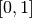. See stepsizeselector for more details.
stepsizeselector¶
(Default value standard)
This parameter allows the user to select which step size selector to use. The available methods are listed in table below.
| Algorithm | Expression |
|---|---|
| gustafsson | 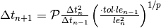 |
| standard | 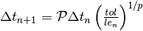 |
The gustafsson stepsize selector is developed by Kjell Gustafsson. ([1], [2])
[1] Control of Error and Convergence in ODE Solvers. PhD thesis, Lund Institute of Technology, 1992.
[2] Control theoretic techniques for stepsize selection in implicit Runge-Kutta methods. ACM TOMS, 21(4):496-517, 1994.
Example Output¶
If the parameter ['output']['statistics'] = True for an ESDIRK-object, the program will, if it terminated successfully, produce a LaTeX/ASCII-table with relevant run time statistics as well as a plot of the selected time steps. The following example statistics were generated by running the heat equation example found at the end of this document.
The ASCII-table looks like this:
********************************************
ODE solver terminated successfully!
********************************************
Method used: ESDIRK43a
Domain: [0,1]
CPU-time: 11
Walltime: 0:00:13
Step size selector: standard
Pessimistic factor: 0.8
Convergence criterion: absolute
Absolute tolerance: 1e-07
Relative tolerance: 1e-06
Number of steps accepted: 193 (98.97%)
Number of steps rejected: 2 (1.03%)
Maximum step size selected: 0.0118945
Minimum step size selected: 0.000177563
Mean step size: 0.00517595
Variance in step sizes: 1.40139e-05
The LaTeX-table looks like this:
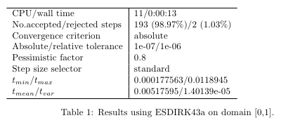The plot of the selected time steps looks like this:
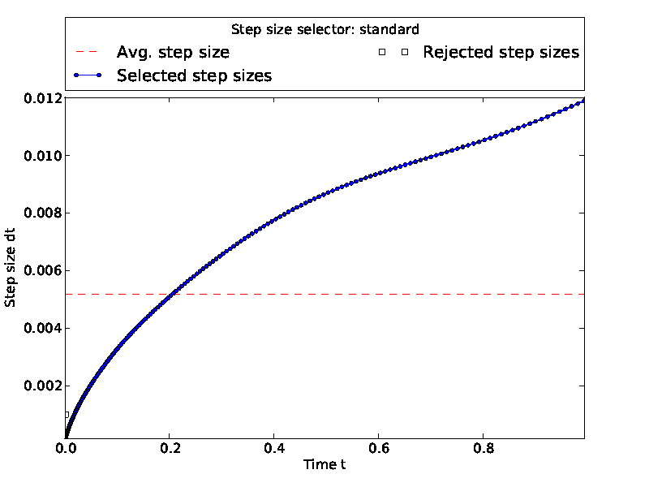Example Problems¶
This section will show some code examples for solving time dependent partial differential equations. It is assumed that the reader is familiar with the FEniCS framework as well as being able to derive the weak form of a PDEs. Hopefully you will be able to solve your own problems using Gryphon by copying and changing these examples.
The Heat Equation¶
Consider the heat equation with a source term given as
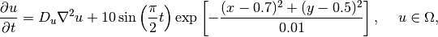
with diffusion coefficient 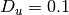 and boundary/initial conditions given as
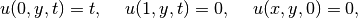
on the spatial domain 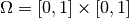 and time domain 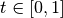.
The FEniCS code for solving this problem using the ESDIRK module can be either be found below or downloaded here.
from gryphon import ESDIRK
from dolfin import *
# Define spatial mesh, function space, trial/test functions
mesh = UnitSquare(29,29)
V = FunctionSpace(mesh,"Lagrange",1)
u = TrialFunction(V)
v = TestFunction(V)
# Define diffusion coefficient and source inside domain
D = Constant(0.1)
domainSource = Expression("10*sin(pi/2*t)*exp(-((x[0]-0.7)*(x[0]-0.7) + (x[1]-0.5)*(x[1]-0.5))/0.01)",t=0)
# Define right hand side of the problem
rhs = -D*inner(grad(u),grad(v))*dx + domainSource*v*dx
# Definie initial condition
W = Function(V)
W.interpolate(Constant(0.0))
# Define left and right boundary
def boundaryLeft(x,on_boundary):
return x[0] < DOLFIN_EPS
def boundaryRight(x,on_boundary):
return 1.0 - x[0] < DOLFIN_EPS
boundarySource = Expression("t",t=0)
bcLeft = DirichletBC(V,boundarySource,boundaryLeft)
bcRight = DirichletBC(V,0.0,boundaryRight)
# Define the time domain
T = [0,1]
# Create the ESDIRK object
obj = ESDIRK(T,W,rhs,bcs=[bcLeft,bcRight],tdfBC=[boundarySource],tdf=[domainSource])
# Turn on some output and save run time
# statistics to sub folder "HeatEquation"
obj.parameters["verbose"] = True
obj.parameters["drawplot"] = True
obj.parameters["output"]["path"] = "HeatEquation"
obj.parameters["output"]["statistics"] = True
# Solve the problem
obj.solve()
The Gray-Scott model¶
The Gray-Scott model is a nonlinear reaction-diffusion system which consist of a coupled system of two partial differential equations given as
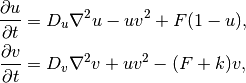
where
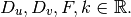
We want to solve this system using the parameters 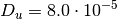, 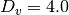, 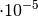, 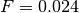, 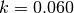 on the spatial domain 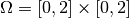 over the time domain 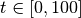, with homogeneous Neumann boundary conditions and initial conditions given as
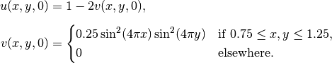
The FEniCS code for solving this problem using the ESDIRK module can be either be found below or downloaded here.
from gryphon import ESDIRK
from dolfin import *
from numpy import power,pi,sin
class InitialConditions(Expression):
def eval(self, values, x):
if between(x[0],(0.75,1.25)) and between(x[1],(0.75,1.25)):
values[1] = 0.25*power(sin(4*pi*x[0]),2)*power(sin(4*pi*x[1]),2)
values[0] = 1 - 2*values[1]
else:
values[1] = 0
values[0] = 1
def value_shape(self):
return (2,)
# Define mesh, function space and test functions
mesh = Rectangle(0.0, 0.0, 2.0, 2.0, 49, 49)
V = FunctionSpace(mesh, "Lagrange", 1)
ME = V*V
q1,q2 = TestFunctions(ME)
# Define and interpolate initial condition
W = Function(ME)
W.interpolate(InitialConditions())
u,v = split(W)
# Define parameters in Gray-Scott model
Du = Constant(8.0e-5)
Dv = Constant(4.0e-5)
F = Constant(0.024)
k = Constant(0.06)
# Define the right hand side for each of the PDEs
F1 = (-Du*inner(grad(u),grad(q1)) - u*(v**2)*q1 + F*(1-u)*q1)*dx
F2 = (-Dv*inner(grad(v),grad(q2)) + u*(v**2)*q2 - (F+k)*v*q2)*dx
# Define the time domain
T = [0,100]
# Create the solver object and adjust tolerance
obj = ESDIRK(T,W,[F1,F2])
obj.parameters["timestepping"]["absolute_tolerance"] = 1e-3
# Turn on some output and save run time
# statistics to sub folder "GrayScott"
obj.parameters["verbose"] = True
obj.parameters["drawplot"] = True
obj.parameters["output"]["path"] = "GrayScott"
obj.parameters["output"]["statistics"] = True
# Supress some FEniCS output
set_log_level(WARNING)
# Solve the problem
obj.solve()
The Cahn-Hilliard equation¶
The Cahn-Hilliard equation is used to model how the mixture of two binary fluids can separate and form domains pure in each component. The equation can be written as the following system
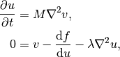
which, when discretized, will result in a DAE system of index 1. We will consider the case when 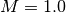, 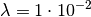 and 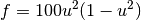 on the spatial domain with homogeneous Neumann boundary conditions. In time, we will consider the domain 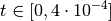. The following initial conditions will be used:
![u(x,y) = 0.63 + 0.02\cdot(0.5 - \chi), \hspace{5mm} \chi \sim Unif[0,1], \hspace{5mm} v(x,y) = 0.](_images/math/d6faf8278fee97a7b868dd7da31e207281ad8003.png)
The FEniCS code for solving this problem using the ESDIRK module can be either be found below or downloaded here.
from gryphon import ESDIRK
from dolfin import *
import random
# Initial conditions
class InitialConditions(Expression):
def __init__(self):
random.seed(2 + MPI.process_number())
def eval(self, values, x):
values[0] = 0.63 + 0.02*(0.5 - random.random())
values[1] = 0.0
def value_shape(self):
return (2,)
# Create mesh and define function spaces
mesh = UnitSquare(49, 49)
V = FunctionSpace(mesh, "Lagrange", 1)
ME = V*V
q,v = TestFunctions(ME)
# Define and interpolate initial condition
u = Function(ME)
u.interpolate(InitialConditions())
c,mu = split(u)
c = variable(c)
f = 100*c**2*(1-c)**2
dfdc = diff(f, c)
lmbda = Constant(1.0e-02)
# Weak statement of the equations
f = -inner(grad(mu), grad(q))*dx
g = mu*v*dx - dfdc*v*dx - lmbda*inner(grad(c), grad(v))*dx
T = [0,5e-5] # Time domain
myobj = ESDIRK(T,u,f,g=g)
myobj.parameters['timestepping']['absolute_tolerance'] = 1e-2
myobj.parameters['timestepping']['inconsistent_initialdata'] = True
myobj.parameters['verbose'] = True
myobj.parameters['drawplot'] = True
# Suppress some FEniCS output
set_log_level(WARNING)
# Solve the problem
myobj.solve()